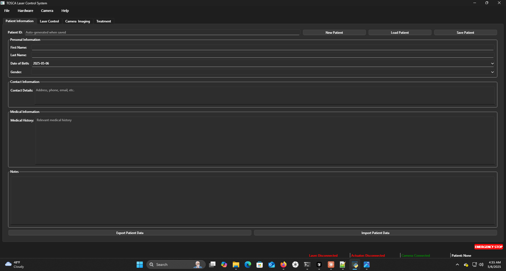
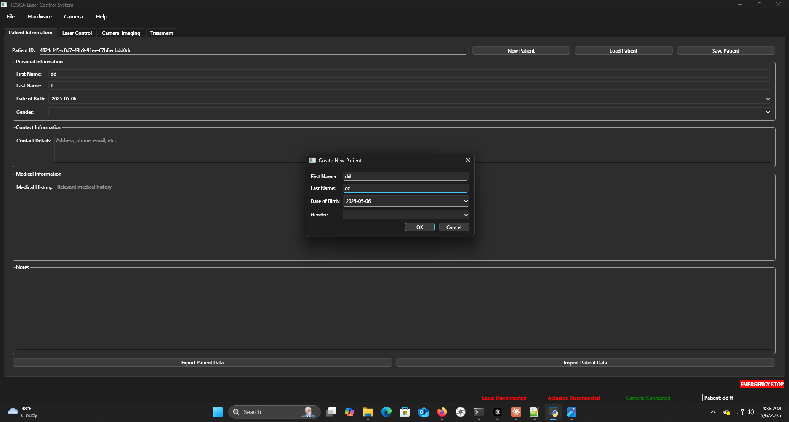
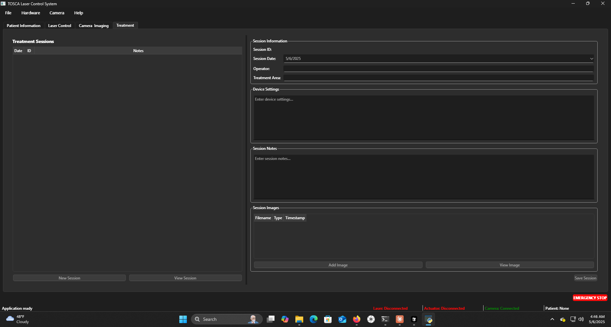
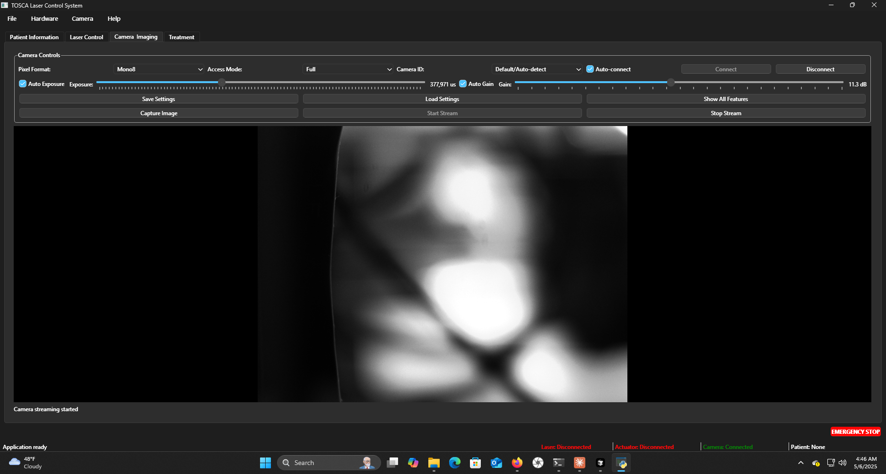
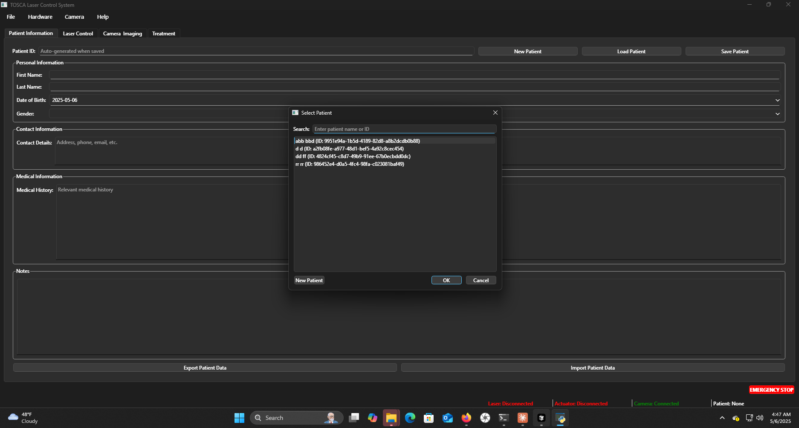

TOSCA Laser Control System - Technical Documentation
Documentation generated: 2025-05-06 04:57:01
System Overview
The TOSCA Laser Control System is an integrated platform designed for medical laser treatments with the following subsystems:
- Centralized Control Interface - Unified access to all system components
- Patient Information Management - Structured clinical data organization
- Treatment Documentation - Standardized parameter recording and session tracking
- Imaging Capabilities - High-resolution image capture with metadata integration
System Architecture
TOSCA employs a modular architecture with distinct functional components that interact through standardized data pathways. The system organizes data in a patient-centric hierarchy, ensuring consistent data access patterns across all modules.
System Components
Main Application Interface
Centralized control interface with organized access to all TOSCA subsystems.
Technical specifications:
- Tabbed interface architecture for logical system organization
- Status bar with real-time patient and system information
- Emergency controls with hardware safety interlocks

Patient Data Management
Comprehensive patient information system with structured data entry and retrieval.
Technical specifications:
- Standardized fields for clinical documentation
- Automatic data validation and error prevention
- Integrated session and image metadata linking

Patient Record Access
Efficient patient lookup system with search and filtering capabilities.
Technical specifications:
- Multi-parameter search functionality (ID, name, date)
- Direct navigation to patient history and treatments
- Integration with the imaging subsystem
Treatment Session Documentation
Comprehensive treatment documentation with standardized parameters and imaging integration.
Technical specifications:
- Structured parameter recording for treatment reproducibility
- Chronological treatment history with comparative analysis
- Multi-modal imaging attachment capability

Imaging Subsystem
High-resolution imaging system with real-time capture and processing capabilities.
Technical specifications:
- Automated image storage with patient record association
- Consistent naming conventions for chronological tracking
- Configurable camera parameters with preset capabilities
- Direct session integration with metadata preservation

Data Organization Structure
Hierarchical data management system ensuring consistent information organization and retrieval.
Technical specifications:
- Patient-centric directory structure
- Session-based image organization
- Standardized file naming with embedded metadata
- Consistent access patterns for programmatic data retrieval
